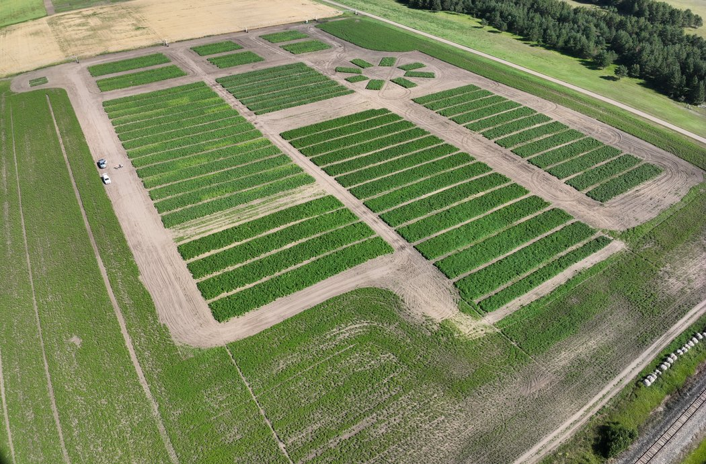

Carberry, Manitoba · Drone imagery & field trials
What can a drone tell us before harvest?
Potato leaves and canopy structure carry different signals. The Carberry trials paired imagery and LiDAR with crop sampling to see how much each signal could tell us about nitrogen and yield at row closure.
See the trial and results